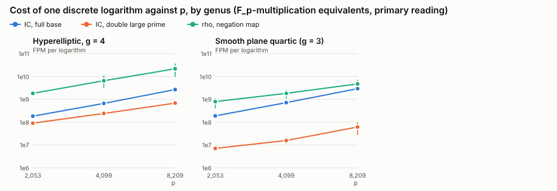
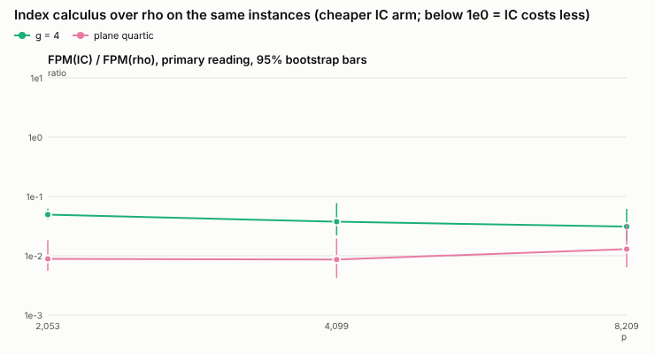

r bound to p, genus 4 and
plane quartics to p = 8209 — results (2026-11-15)Status: [pcc:unverified]; independent replay by a
validator agent on the same shared host is in
VALIDATION_REPORT.md (see “Validation” below). No isolated
host, so no row reaches the IC leaderboard or
benchmarks/README.md. Protocol: PROTOCOL.md (frozen before data,
frozen.sha256); binary binary.sha256 (sha
61ccabd2…, source commit 14ab74ec8b); data
bound_r.jsonl, analysis.json,
data.sha256; tables tables.md; bench record
benchmarks/records/20261115T0031Z-genus-ladder-bound-r.json.
Genus-4 hyperelliptic curves and smooth plane quartics over
p = 2053, 4099, 8209, cofactor h <= 2 (so
ln r is within ln 2 of ln #J), 3
curves per cell, 2 solver seeds, arms a (full base + prefilter), c
(double large prime + prefilter), R (negation rho) and the three quartic
arms. 108 runs, all certified; no rho run hit the cap.
Admission at genus 4 with h <= 2 took 109, 418 and 407
seeds (1 in 36 to 1 in 139); the whole run was 4,246 s on four workers
(the genus-4 instance search at 8209 alone was 3,744 s single-threaded;
the solver runs were seconds each, rho at 8209 about 100 s).


Primary reading, F_p-multiplication equivalents
(cantor_mul + 10·inv + rel_mul + g²·la_mul), means over 6
runs with hierarchical bootstrap 95% intervals.
| p | genus-4 arm c | genus-4 rho | c / rho | quartic 2LP | quartic rho | 2LP / rho |
|---|---|---|---|---|---|---|
| 2053 | 8.93e7 | 1.81e9 | 0.049 [0.041, 0.062] | 7.0e6 | 7.9e8 | 0.0089 [0.0056, 0.018] |
| 4099 | 2.40e8 | 6.42e9 | 0.038 [0.022, 0.077] | 1.6e7 | 1.8e9 | 0.0086 [0.0042, 0.020] |
| 8209 | 6.74e8 | 2.16e10 | 0.031 [0.018, 0.062] | 6.1e7 | 4.7e9 | 0.013 [0.0064, 0.035] |
p: exponent 1.458
[1.449, 1.467] against rho’s 1.79 [1.20, 2.22] (theory 1.5 and 2; three
primes give a wide rho interval). Under the GAE band the verdict stays
unresolved at every prime: at w = 1 the interval straddles
1 (8209: [0.48, 1.64]); at w = 0 and w = 0.1
the arm is below (8209: [0.0022, 0.0074] and [0.089, 0.304]).w = 0 and above at w = 0.1 and
w = 1 (one line relation costs no group operation but
hundreds of native multiplications, which that band prices against rho’s
one step). Its FPM exponent is 1.56 [0.97, 1.96] on three primes,
dominated by the conic evaluations of the decomposition rows
(rel_mul is 70% to 80% of its FPM); the full-base Diem arm
grows as 1.98 [1.90, 2.05] because of its dense-ish linear algebra.r to p removed the cofactor
scatter: mean ln r is 30.3, 33.0, 35.6 at genus 4
(ln #J minus at most ln 2), and the rho
exponent moved from 1.90 (first run, h <= 8) to 1.79
with a much wider interval, because only three primes and six runs per
cell are behind it.f with 1 or 2
irreducible factors (9 of 9), as the rational 2-rank forces under
h <= 2.Scorecard (PROTOCOL.md section 3): B1 held (108/108); B2 held (1.79
[1.20, 2.22] overlaps 2.0 ± 0.25; a weak test); B3 held (FPM band below
at all three primes; GAE w = 0 and w = 0.1
below at 8209); B4 held; B5 held.
VALIDATION_REPORT.md is written by a separate validator
agent that builds its own binary from the stated commit, replays cells
of the protocol’s command and compares every counted field with
bound_r.jsonl, and recomputes the cell means from the raw
data. The host is this same shared 4-vCPU container: that replay is a
reproducibility check of the counted units on one machine, not the
isolated-host measurement the validation gate asks for. Standing after
the replay: see the report’s verdict.
nohup, not under
tools/benchrec.py run; the command, start time, wall and
exit code were added to the bench record afterwards from the driver’s
own config and done lines, and the record says
so.render.py are the first
study’s, unchanged.Three primes; 3 curves and 6 runs per cell; genus 4 only on the
hyperelliptic side; generic Cantor group law; the quartic rho’s per-step
cost (about 8,900 field multiplications per Pic addition)
makes its IC/rho ratios small for a reason that is not the index
calculus. Toy sizes: #J up to 2^51.